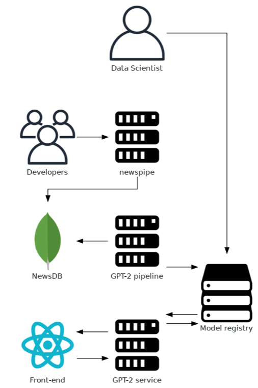

NewsPipe is a complete ecosystem for training and deploying GPT-2. It includes many comprehensive tools, which you can use for many other use cases too.
The idea is to have a continuous learning pipeline for GPT-2. The developers defines some news sources with a simple link and start their crawling jobs. Each crawler stores the crawled news articles in a MongoDB. The GPT-2 training pipeline gets all articles from the MongoDB and trains a model on them. Each trained model is stored in a MLFlow model registry, where a Data Scientist can define the state of a model. When a model is in production state, it is retrieved by our GPT-2 service and used for text generation. The service can be used with a React application.
A generic news article crawling and information extracting python libary. It utilities popular frameworks newspaper3k, goose and request for extracing the article text. Other informations like title, author, … are extracted from the RSS feed.
View ProjectA scalable news article crawling and information extracting system built on top of Apache-Airflow and newscrawler. You can manage your job with the built in dashboard, run the whole system on a Celery cluster or on your server and add news sources by just simply providing a link to the RSS feed or website.
View ProjectA complete end-end production-ready pipeline for GPT-2 based on Googles framework TensorflowExtended. It includes training from scatch and finetuning from the OpenAI trained models. The data can be loaded from a MongoDB or a file on your local file system. This can also be extended to any data source you need. Training can then be monitored with Tensorboard and trained models can be pushed automatically to a MLFlow model regristy.
View ProjectThe complete code for running a encrypted MLFlow server for tracking your models and experiments on your server.
View ProjectThe web application for generating German newspaper articles. It consists of a React frontend and the Scala Play service for GPT-2.
View Project